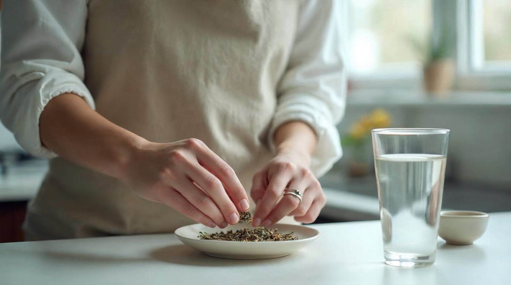
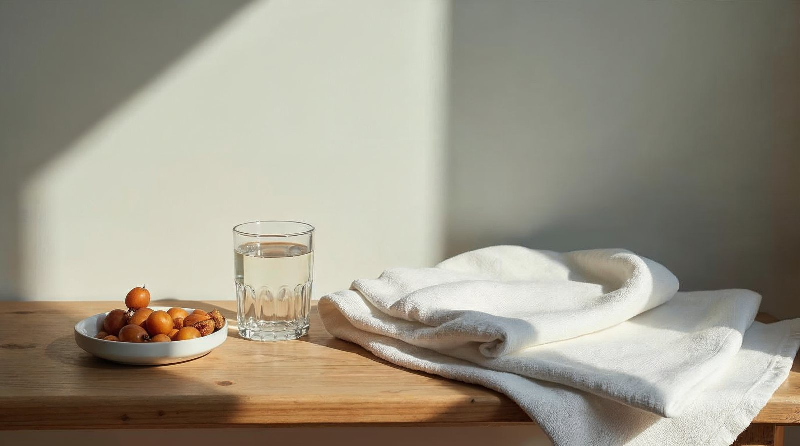
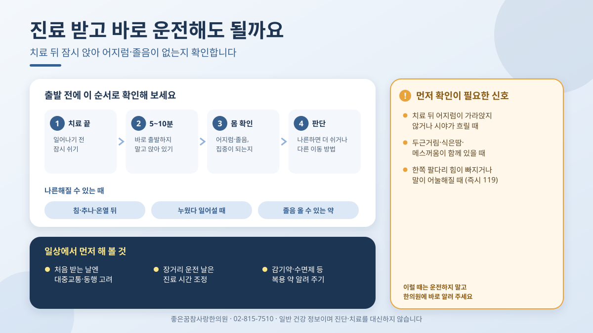

이종호 한의사 감수좋은꿈참사랑한의원 대표원장 (한의사 면허번호 19769)발행 2026-11-23 · 수정 2026-11-26
이 글의 차례
- 왜 치료 뒤 몸 상태를 확인해야 할까요
- 자주 하는 오해
- 예를 들면 이런 경우입니다
- 먼저 이렇게 여쭙니다
- 일상에서 먼저 해 볼 수 있는 것
- 스스로 점검해 보세요
- 한의원에서 함께 살필 수 있는 경우
- 얼마나 지켜보면 될까요
- 이렇게 기록해 오시면 상담이 쉬워집니다
- 나른함, 졸음, 어지럼은 어떻게 구분할까요?
- 출발하기 전에 이 순서로 확인해 보세요
- 운전이 많은 분은 진료 시간을 이렇게 골라 보세요
- 한약을 처음 먹기 시작한 주에는 이렇게 살펴보세요
- 운전 자세 때문에 목과 허리가 불편하다면
- 왜 처음 받는 치료 날에 더 조심할까요?
- 가족이나 아이를 태우고 가야 한다면
- 이런 날은 진료 전에 먼저 말씀해 주세요
- 차 안에서 쉬었다 갈 때는
- 운전하다 몸이 불편해지면
- 오토바이나 자전거로 오셨다면
- 진료 시간을 짧게 잡아야 하는 날
- 왜 이전 경험을 기록해 두면 좋을까요?
- 진료가 끝난 뒤 바로 해야 할 일이 운전만은 아닙니다
- 처음에는 걸어서 오거나 대중교통을 이용해 보세요
- 이런 증상은 먼저 확인이 필요합니다
- 함께 읽으면 좋은 글
진료 뒤 바로 운전해도 되는지는 일률적으로 정해져 있지 않고, 치료를 마친 뒤 잠시 앉아 어지럼이나 졸음이 없는지 확인한 다음 판단하시면 됩니다. 어지럽거나 졸리면 그 느낌이 가실 때까지 운전하지 마세요.
몸이 풀려 나른하거나 집중이 어렵다면 충분히 쉬었다 출발하거나 다른 사람이 운전하는 편이 안전합니다. 차로 오시는 분들이 많이 묻는 내용입니다.
왜 치료 뒤 몸 상태를 확인해야 할까요
- 침이나 추나, 온열 치료 뒤에는 긴장이 풀려 나른하거나 졸린 분이 있습니다.
- 누워 있다가 갑자기 일어나면 잠깐 어지러울 수 있습니다.
- 한약 처방에 따라 졸음이 느껴지는 분도 있어 복용 뒤 반응을 알아 두면 좋습니다.
- 운전은 짧은 순간의 집중력이 중요해 작은 어지럼도 위험할 수 있습니다.
자주 하는 오해
- 침은 짧은 치료라서 바로 운전해도 된다고 여기기 쉽지만, 긴장이 풀리면서 나른함이 오는 분도 있어 잠시 앉아 확인하는 편이 좋습니다.
- 지난번에 괜찮았으니 이번에도 괜찮다고 생각하기 쉽지만, 그날의 잠과 식사, 피로에 따라 몸의 반응은 달라질 수 있습니다.
- 차 안에서 잠깐 눈을 붙이면 된다고 여기기 쉽지만, 졸음이 이어진다면 운전을 미루거나 다른 이동 방법을 고르는 편이 안전합니다.
예를 들면 이런 경우입니다
- 예를 들어 야근 뒤 잠을 못 자고 퇴근길에 들른 직장인이라면, 그날은 치료 강도를 조정하고 끝난 뒤 충분히 쉬었다가 출발하도록 안내합니다.
- 예를 들어 아이를 데리러 가야 해서 치료 뒤 바로 운전해야 하는 분이라면, 시간 여유를 먼저 여쭙고 그에 맞춰 진행 순서를 정합니다.
- 예를 들어 어르신이 처음으로 온열 치료와 침을 함께 받는 날이라면, 일어날 때 천천히 앉았다 일어나시도록 돕고 가족의 운전이나 대중교통을 권해 드릴 수 있습니다.
먼저 이렇게 여쭙니다
- 직접 운전해서 오셨고, 돌아갈 때도 운전하시나요?
- 평소 운전 시간과 장거리 운전 여부는 어떤가요?
- 치료 중이나 뒤에 어지럽거나 졸린 적이 있었나요?
- 졸음이 올 수 있는 약을 드시나요?

일상에서 먼저 해 볼 수 있는 것
- 치료 뒤 바로 출발하지 말고 잠시 앉아 몸 상태 확인하기
- 어지럽거나 졸리면 그 느낌이 가실 때까지 운전하지 않기
- 처음 받는 치료 날에는 대중교통이나 동행인 이동 고려하기
- 장거리 운전이 예정된 날은 진료 시간을 조정하기
- 진료 전 가볍게 식사하고, 잠이 많이 부족한 날은 미리 말하기
- 출발 전 물을 한 잔 마시고 차 안 온도를 너무 덥지 않게 맞추기
스스로 점검해 보세요
치료가 끝나고 출발하기 전에 아래를 확인해 보세요.
- 앉았다 일어날 때 핑 도는 느낌이 없다
- 눈꺼풀이 무겁거나 하품이 계속 나지 않는다
- 시야가 흐리거나 초점이 잘 맞지 않는 느낌이 없다
- 손발에 힘이 평소처럼 들어간다
- 속이 메스껍거나 식은땀이 나지 않는다
- 오늘 졸음이 올 수 있는 약(감기약, 알레르기약 등)을 먹지 않았다
하나라도 마음에 걸린다면 바로 출발하지 말고 더 쉬어 보세요. 쉬어도 그대로라면 그날은 운전하지 마시고 직원에게 알려 주세요.

한의원에서 함께 살필 수 있는 경우
- 치료 뒤 몸이 풀려 나른함이 크게 올 때 그날 컨디션과 치료 강도를 함께 조정합니다.
- 장시간 운전으로 목과 허리가 불편할 때 운전 자세와 함께 살핍니다.
- 치료 중 어지러웠던 적이 있다면 자세와 진행 속도를 바꿔 진행합니다.
좋은꿈참사랑한의원에서는 치료 전에 귀가 방법을 여쭙고, 치료가 끝나면 일어나기 전 잠시 쉬게 한 뒤 몸 상태를 확인합니다. 귀가 전에는 그날 지켜볼 점을 함께 알려 드립니다.
첫 방문에는 문진으로 불편한 점과 이동 방법을 듣고, 진맥으로 그날 몸 상태를 살핍니다. 필요하다고 판단될 때만 장비로 아픈 부위를 확인하고, 잠과 식사, 평소 운전 시간 같은 생활 기록을 함께 본 뒤 치료 방향과 그날 주의할 점을 설명해 드립니다. 운전 때문에 생긴 목·허리 불편이라면 좌석 높이와 등받이 각도, 쉬는 간격도 함께 이야기합니다.
얼마나 지켜보면 될까요
- 정해진 시간보다 몸의 느낌이 기준입니다. 치료 뒤 나른함은 잠시 쉬면 가라앉는 경우가 많으니, 앉아서 지켜보다가 어지럼과 졸음이 다 가신 뒤에 출발하세요.
- 쉬어도 어지럼이나 졸음이 가시지 않는다면 그날은 운전하지 말고 한의원에 알려 주세요.
- 치료를 받을 때마다 비슷한 나른함이 반복된다면 다음 진료에서 말씀해 주세요. 치료 강도와 순서를 함께 다시 정합니다.
이렇게 기록해 오시면 상담이 쉬워집니다
- 이전 치료 뒤 나른함이나 어지럼이 있었던 경험
- 복용 중인 약(감기약, 수면제, 알레르기약 등 졸음이 올 수 있는 약)
- 평소 운전 시간과 주로 운전하는 시간대
- 운전 중 목·허리 불편이 생기는 때
- 진료 뒤 이어지는 일정(출근, 아이 데리러 가기, 장거리 이동 등)
- 전날 잠든 시간과 깬 시간, 진료 전 식사 여부
이 메모를 바탕으로 치료 시간과 강도, 끝난 뒤 쉬는 시간을 미리 정해 두면 진료 뒤 이동이 한결 편해질 수 있습니다. 차로 오셨다는 점을 접수 때 한마디만 알려 주셔도 됩니다.
나른함, 졸음, 어지럼은 어떻게 구분할까요?
나른함은 몸이 풀리며 힘이 쭉 빠지는 느낌에 가깝습니다. 앉아서 물을 마시고 쉬면 대개 가라앉습니다. 졸음은 눈꺼풀이 무겁고 하품이 이어지는 느낌으로, 운전할 때는 나른함보다 더 조심해야 합니다.
어지럼은 앉았다 일어날 때 핑 도는 느낌으로 오는 경우가 많습니다. 세 가지 중 어느 쪽인지 알면 얼마나 더 쉬어야 할지, 그날 운전을 미룰지 정하기 쉬워집니다. 어떤 느낌이었는지 직원에게 그대로 말씀해 주세요.
출발하기 전에 이 순서로 확인해 보세요
- 1. 치료가 끝나면 바로 벌떡 일어나지 말고 천천히 앉았다가 일어섭니다.
- 2. 대기실 의자에 앉아 물을 한 잔 마시며 몸의 느낌을 살핍니다.
- 3. 몇 걸음 걸어 보며 다리에 힘이 평소처럼 들어가는지 봅니다.
- 4. 차에 타서도 바로 출발하지 말고 좌석과 거울을 맞추며 한 번 더 확인합니다.
이 과정에서 하나라도 개운치 않으면 조금 더 쉬어 가세요. 몇 분 더 쉬는 것이 이후 일정을 지키는 데 오히려 도움이 됩니다.
운전이 많은 분은 진료 시간을 이렇게 골라 보세요
운전이 일인 분이라면 근무를 마친 뒤로 진료를 잡는 것이 편합니다. 진료 뒤 곧바로 장거리를 달려야 하는 날보다, 짧게 집에만 가면 되는 날이 몸 상태를 살피기에도 여유가 있습니다.
장거리 운전이 예정된 날이라면 그 직전보다 하루 이틀 앞서 진료를 받는 쪽을 생각해 보세요. 진료 예약을 잡을 때 그날 운전 일정을 함께 말씀해 주시면 치료 순서와 쉬는 시간을 거기에 맞춰 정합니다.
한약을 처음 먹기 시작한 주에는 이렇게 살펴보세요
한약을 처음 드시는 주에는 복용한 뒤 한두 시간 사이에 졸리거나 몸이 무거운지 살펴 두세요. 처음 며칠은 운전 직전보다 운전할 일이 없는 시간에 드시면서 몸의 반응을 확인해 보시면 좋습니다.
운전을 자주 하신다는 점을 처음 상담 때 알려 주시면 복용 시간을 정할 때 함께 고려합니다. 다른 약을 함께 드신다면 그 약의 이름도 같이 알려 주세요.
운전 자세 때문에 목과 허리가 불편하다면
좌석은 무릎이 엉덩이와 비슷한 높이가 되게 맞추고, 등받이는 너무 눕히지 않는 것이 좋습니다. 핸들은 팔을 뻗었을 때 팔꿈치가 살짝 굽혀지는 거리에 두면 어깨가 덜 올라갑니다.
허리 뒤가 뜬다면 작은 쿠션이나 접은 수건을 대 보세요. 오래 운전하는 날은 한두 시간마다 차에서 내려 몇 분 걷고 목을 천천히 돌려 주세요. 이런 습관을 적어 오시면 진료 때 함께 다듬습니다.
왜 처음 받는 치료 날에 더 조심할까요?
처음 받는 치료는 몸이 어떻게 반응할지 아직 모르는 상태입니다. 긴장했던 근육이 한꺼번에 풀리며 생각보다 나른함이 크게 오는 분도 있고, 아무렇지 않은 분도 있습니다.
그래서 처음 몇 번은 진료 뒤 일정을 여유 있게 잡아 두시기를 권합니다. 몇 번 받아 보며 내 몸이 어떻게 반응하는지 알게 되면, 그다음부터는 진료 뒤 일정을 정하기가 한결 쉬워집니다.
가족이나 아이를 태우고 가야 한다면
뒷좌석에 아이나 어르신을 태우고 가야 하는 날은 혼자 운전할 때보다 더 넉넉하게 쉬었다 출발해 주세요. 운전할 수 있는 다른 가족이 함께 왔다면 돌아갈 때는 운전을 맡기는 것도 좋은 방법입니다.
아이를 데리러 가는 시간이 정해져 있다면 접수할 때 그 시각을 알려 주세요. 치료가 끝난 뒤 쉬는 시간까지 생각해 순서를 맞춥니다.
이런 날은 진료 전에 먼저 말씀해 주세요
- 밤샘 근무나 야간 근무를 마치고 바로 온 날
- 식사를 거르고 온 날
- 감기약이나 알레르기약을 먹은 날
- 전날 술을 마신 날
- 평소보다 유난히 피곤한 날
이런 날은 같은 치료에도 나른함이 더 크게 올 수 있습니다. 미리 알려 주시면 치료 강도와 쉬는 시간을 거기에 맞춰 조정합니다.
차 안에서 쉬었다 갈 때는
주차장처럼 안전한 곳에 차를 세운 채로 쉬시고, 차 안이 너무 덥지 않게 창문을 조금 열어 두세요. 따뜻한 히터 바람은 졸음을 더 부를 수 있습니다.
쉬고 나서도 눈꺼풀이 무겁다면 조금 더 쉬거나 그날은 다른 방법으로 이동해 주세요. 무리해서 출발하기보다 한 번 더 몸의 느낌을 확인하는 것이 안전합니다.
운전하다 몸이 불편해지면
출발한 뒤에 나른함이나 졸음이 다시 느껴지면 안전한 곳에 차를 세우고 쉬어 주세요. 창문을 열어 바람을 쐬고 잠시 걸으면 몸이 깨는 데 도움이 됩니다.
그날 언제쯤, 어떤 느낌이었는지 기억해 두었다가 다음 진료 때 말씀해 주세요. 그 정보를 바탕으로 다음 치료의 순서와 진료 뒤 쉬는 시간을 다시 정합니다.
오토바이나 자전거로 오셨다면
오토바이나 자전거는 자동차보다 몸의 균형과 순간적인 반응이 더 중요합니다. 치료 뒤 나른함이 조금이라도 남아 있다면 자동차를 운전할 때보다 더 넉넉하게 쉬었다 출발해 주세요.
추운 날 바람을 맞으며 달리면 치료로 풀린 목과 어깨가 금세 다시 움츠러들 수 있습니다. 목도리나 넥워머로 목을 따뜻하게 감싸고 출발하시면 좋습니다.
진료 시간을 짧게 잡아야 하는 날
진료 뒤 곧바로 운전해야 하는 일정이 있다면 접수할 때 "오늘은 끝나고 바로 운전해야 해요"라고 알려 주세요. 그날은 치료 뒤 쉬는 시간을 확보할 수 있도록 순서를 맞추고, 몸 상태를 확인한 뒤 출발하실 수 있게 돕습니다.
시간이 많이 빠듯한 날이라면 무리해서 진료를 받기보다 여유 있는 날로 예약을 옮기는 것도 방법입니다.
왜 이전 경험을 기록해 두면 좋을까요?
몇 번 진료를 받으면 내 몸이 치료 뒤 어떻게 반응하는지 일정한 흐름이 보입니다. 예를 들어 늘 치료 뒤 10분쯤 나른하다가 가라앉는다면, 그 시간을 감안해 일정을 잡을 수 있습니다.
그 흐름을 휴대폰에 짧게 적어 두면 다음 진료 때 치료 강도와 쉬는 시간을 정하는 데 그대로 쓰입니다. "지난번 추나 뒤 15분쯤 나른했음"처럼 한 줄이면 충분합니다.
진료가 끝난 뒤 바로 해야 할 일이 운전만은 아닙니다
운전뿐 아니라 높은 곳에 올라가는 일, 무거운 물건을 드는 일, 기계를 다루는 일처럼 순간의 집중이 필요한 일이 진료 뒤에 잡혀 있다면 함께 알려 주세요. 기준은 운전과 같습니다. 몸의 느낌이 평소로 돌아온 뒤에 시작하는 것이 안전합니다.
예를 들어 진료를 마치고 곧바로 현장 일을 하러 가야 하는 분이라면, 그날은 치료 뒤 쉬는 시간을 조금 더 두고 출발하시도록 안내합니다. 일의 종류를 알려 주시면 그에 맞춰 진행 순서를 정하기 쉽습니다.
처음에는 걸어서 오거나 대중교통을 이용해 보세요
몸이 치료에 어떻게 반응하는지 아직 모르는 처음 한두 번은 걸어서 오시거나 대중교통을 이용해 보시는 것도 좋습니다. 운전 걱정 없이 치료 뒤 느낌을 차분히 살펴볼 수 있어, 다음부터 차를 가져와도 될지 스스로 판단하기 쉬워집니다.
가족에게 데리러 와 달라고 부탁할 수 있는 날을 첫 진료 날로 잡는 것도 좋은 방법입니다. 그날의 경험이 이후 진료 뒤 일정을 정하는 기준이 되어 줍니다.
이런 증상은 먼저 확인이 필요합니다
- 치료 뒤 어지럼이 가라앉지 않거나 시야가 흐린 경우
- 한쪽 팔다리에 힘이 빠지거나 말이 어눌해지는 경우(즉시 가까운 응급실)
이런 신호가 있으면 한의원보다 가까운 병원이나 응급실을 먼저 찾으세요.
함께 읽으면 좋은 글

여쭙는 것
- 직접 운전해서 오셨고, 돌아갈 때도 운전하시나요?
- 평소 운전 시간과 장거리 운전 여부는 어떤가요?
- 치료 중이나 뒤에 어지럽거나 졸린 적이 있었나요?
생활에서 해 볼 것
- 치료 뒤 바로 출발하지 말고 잠시 앉아 몸 상태 확인하기
- 어지럽거나 졸리면 그 느낌이 가실 때까지 운전하지 않기
- 처음 받는 치료 날에는 대중교통이나 동행인 이동 고려하기
한의원에서 함께 살필 것
- 치료 뒤 몸이 풀려 나른함이 크게 올 때 그날 컨디션과 치료 강도를 함께 조정합니다.
- 장시간 운전으로 목과 허리가 불편할 때 운전 자세와 함께 살핍니다.
- 치료 중 어지러웠던 적이 있다면 자세와 진행 속도를 바꿔 진행합니다.
먼저 확인이 필요한 신호
- 치료 뒤 어지럼이 가라앉지 않거나 시야가 흐린 경우
- 한쪽 팔다리에 힘이 빠지거나 말이 어눌해지는 경우(즉시 가까운 응급실)
한눈에 보는 표
| 구분 | 핵심 |
|---|---|
| 여쭙는 것 | 직접 운전해서 오셨고, 돌아갈 때도 운전하시나요? 평소 운전 시간과 장거리 운전 여부는 어떤가요? |
| 생활에서 해 볼 것 | 치료 뒤 바로 출발하지 말고 잠시 앉아 몸 상태 확인하기 어지럽거나 졸리면 그 느낌이 가실 때까지 운전하지 않기 |
| 한의원에서 함께 살필 것 | 치료 뒤 몸이 풀려 나른함이 크게 올 때 그날 컨디션과 치료 강도를 함께 조정합니다. 장시간 운전으로 목과 허리가 불편할 때 운전 자세와 함께 살핍니다. |
| 먼저 확인이 필요한 신호 | 치료 뒤 어지럼이 가라앉지 않거나 시야가 흐린 경우 한쪽 팔다리에 힘이 빠지거나 말이 어눌해지는 경우(즉시 가까운 응급실) |
자주 묻는 질문
치료받고 운전하면 안 되나요?
일률적으로 금지하지는 않지만 어지럽거나 졸리다면 운전하지 않는 것이 안전합니다.
차에서 쉬었다 가도 되나요?
안전한 장소에서 쉬되, 어지럼이나 졸음이 다 가신 뒤에 출발하세요.
한약을 먹고 나서 운전해도 되나요?
처방에 따라 다를 수 있습니다. 복용 뒤 졸음이나 어지럼이 있다면 그동안은 운전하지 마시고 미리 알려 주세요.
주차는 어떻게 하나요?
주차 가능 여부와 위치는 방문 전 02-815-7510으로 전화하시면 안내해 드립니다.
추나나 체외충격파를 받은 날도 운전해도 되나요?
치료 종류보다 끝난 뒤 몸의 느낌이 기준입니다. 잠시 앉아 어지럼과 졸음, 통증이 없는지 확인한 뒤 출발하세요.
좋은꿈참사랑한의원은 재진 때 지난번 이야기부터 이어서 여쭙니다. 진료시간과 예약은 오시는 길에서 확인하세요.
어디서 상담받을 수 있나요?
좋은꿈참사랑한의원은 서울 동작구 만양로2길 2 신성빌딩 3층·5층(서울 동작구 상도동, 7호선 상도역 3번 출구 근처)에 있습니다. 한의사 3명(이종호 대표원장, 조영기 수석진료원장, 정원영 진료원장)이 진료합니다. 진료시간은 평일 09:30~20:00(점심 13:00~14:00), 토·일·공휴일 09:30~15:00이며, 방문 전 전화로 확인을 권합니다. 예약은 네이버 예약, 카카오톡 상담, 전화 02-815-7510로 받습니다.
이 글은 일반적인 건강 정보이며 개인의 진단이나 치료를 대신하지 않습니다. 증상이 있거나 복용 중인 약이 있다면 진료를 통해 확인하세요. 치료 효과는 개인마다 다를 수 있습니다.
작성 기준: 일반적으로 알려져 있는 건강 정보를 참고해 정리했습니다(대표원장 감수). 증상 기록은 1~2주 동안 하루 1회, 비슷한 시간에 적어 오시면 지난 상태와 비교하기 쉽습니다.